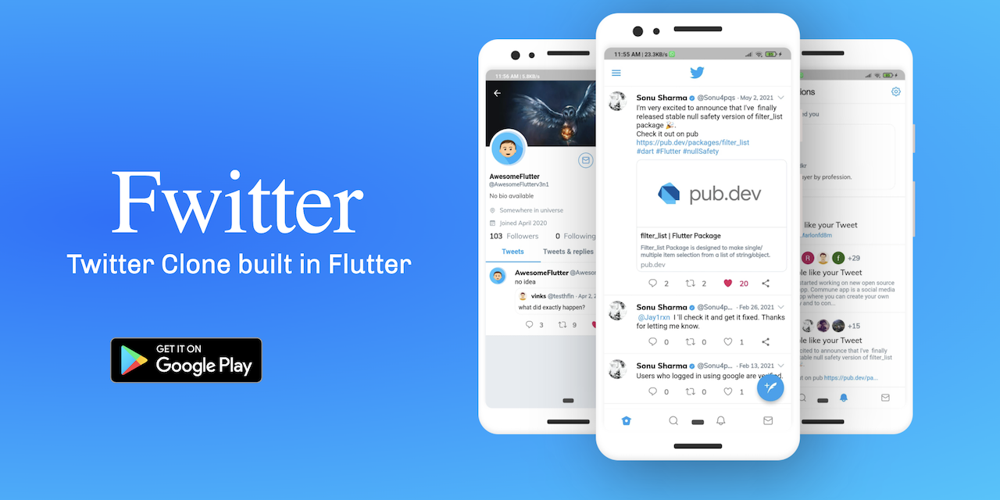
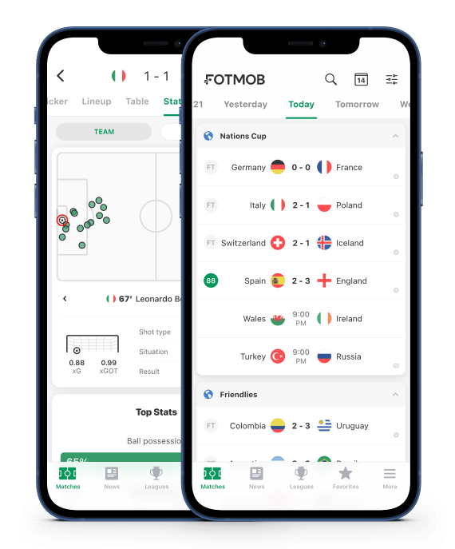
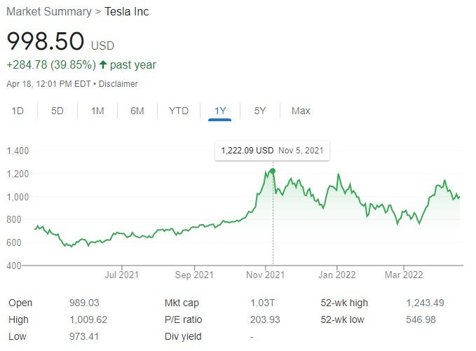

 Hello, my name is Kamron Obeng and I am very passionate about my software engineering course I have done some independent passion projects to hone and refine my skills the first one is an is website clone this website is an exact copy of Twitter as you can see the interface is responsive and working and everything works without crashing. This also shows that I pay attention to detail and I can produce a copy of any website or app. Since most of us spent our time on social media I also thought it will be sensible to start practising on projects like this now.  The other project that I made is a live sports match tracker the app and website give you all the live scores, stats, and storylines to keep you up to speed with every significant professional played sport from around the world. Personalised news and notifications make it easy to follow your favourite teams and players. And lightning-quick match updates ensure you never miss a goal, no matter where you are. I did this project because expand my knowledge and to test some CSS style components I also like watching sports but I don't always have time so this will also become useful to me.  My last project I what to show on this website with you all here is a stock trading website and app. The project operates using algorithms, formulas and artificial intelligence to track and project the behaviour of the stock and will tell you when to buy and sell protecting your investments. I did this project because it will look great on the portfolio, this is an app that will be used by many and it's multipurpose. This project is very different from the other ones since it uses algorithms, formulas and artificial intelligence so it shows how versatile I am. artificial intelligence is also the future so im banking on that.